funsplash documentation
Table of Contents
Funsplash is a clone of the image sharing platform Unsplash and meant to replicate the overall feel as well as its core features.
The entire application is written in the Gleam programming language with some ffi to JavaScript and Erlang. All data storage happens in a PostgreSQL database and photo files are stored on the file-system.
- Frontend: Gleam with the
lustreframework, compiled to JavaScript - Backend: Gleam with the
wispweb framework - Censoring: Using pure Erlang functions called from Gleam.
- Storage: PostgreSQL database with bindings generated by
squirrel. Filesystem for storing photo data usingsimplefile. - WebSockets: Uses
mistfor the WebSocket censor endpoint.
All code is available to players during the CTF.
1. Installation
As with all Enowars services, the checker and service are run as separate instances.
1.1. Service
On the initial build TailwindCSS and bun are downloaded which might prolong the build time depending on your internet connection.
The required docker images are postgres:18-alpine and gleam:1.17.0-erlang-alpine
git clone https://github.com/enowars/enowars10-service-funsplash.git
cd enowars10-service-funsplash/service
docker compose up --build -d
1.2. Checker
The only unusual thing about the checker is that it runs Python version 3.14 with uv rather then the template provided setup. Because of this, Mongo v7 cannot be used and v8 must be used instead.
git clone https://github.com/enowars/enowars10-service-funsplash.git
cd enowars10-service-funsplash/checker
docker compose up --build -d
2. Usage
The server runs a HTTP-webserver on the port 1337 and the checker uses port 11337.
It uses a traditional REST API. All API HTTP calls go to /napi.... File
2.1. Browsing the site
An unauthenticated user has permissions to search for other users, view their profiles, and view their photos.
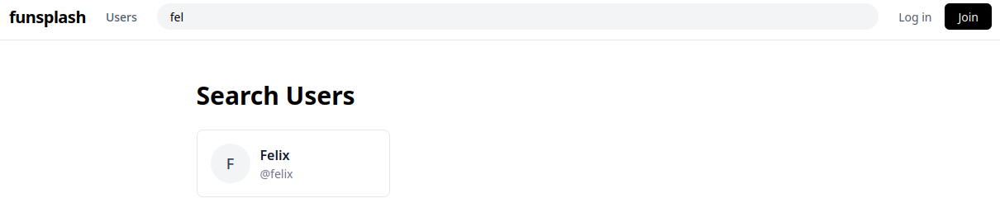
Figure 1: fuzzy searching a user named feli returns the existing user felix
2.2. Creating an Account
To create an account click Join and fill out the registration form. And click Login to login with their username and password.
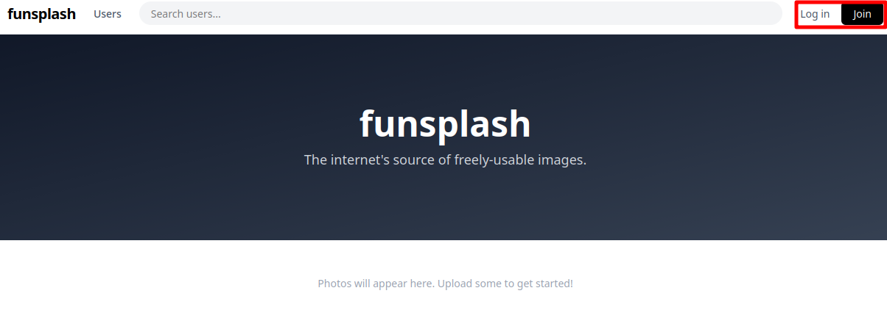
Figure 2: Account creation view
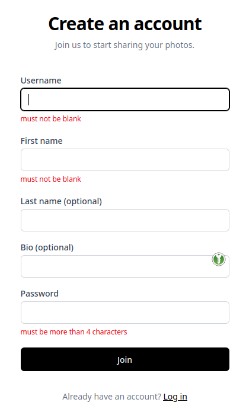
The only mandatory fields are Username, First Name, and Password (the same as unpslash.com). The other fields are inconsequential.
Upon creating an account, users are automatically logged in.
2.3. Uploading a photo
When logged in, users can upload photos with some Metadata.
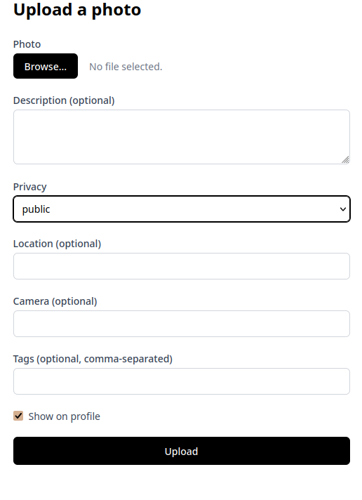
Figure 3: Privacy level dropdown. Private, Premium, and Public.
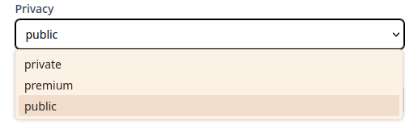
2.4. Photo privacy
Photos they have three levels of privacy
private, where the photo will be only displayed to the ownerpublic, for photos visible by everyonepremium, visible only by the owner themselves and premium users (which don't exist). This privacy only affects the actual photo, the metadata, such as description will is not affected.
If the option show on profile is set, photos (although possibly censored) will appear on the users profile, with their metadata visible to all. If not photos will be only visible on the profile page to the owner but remain visible (however censored according to their privacy level) by their public link.
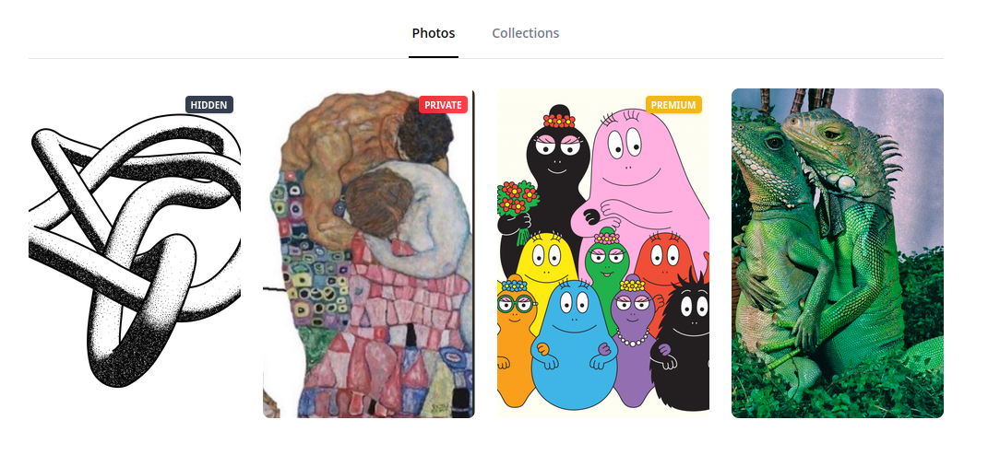
Figure 4: The view of an authenticated user on their own profile.
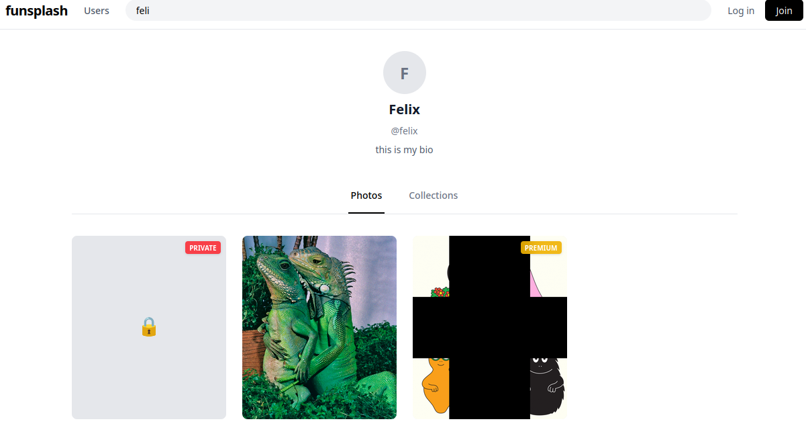
Figure 5: The view of an un-authenticated user on very same the profile.
The premium photo will get censored on the server with a large black cross in the middle after the upload in a separate directory next to the uncensored photos.
The premium censor mask only works on PNGs. For other images a broken icon will appear instead.
2.5. Censoring
The same functionality from the premium censor is also available to users to censor images by drawing on them. Any user can join the collaborative photo censoring.
Censoring is being done live on the server and for which the communication containing of, the censor-mask and the reply (whether the update went ok), is done over a WebSocket. The decision about a censoring being allowed is dependent on whether the new updated photo would exceed the storage quota of the photos owner.
Once the WebSocket is closed, the image is saved (if the storage quota is not violated) with the same settings/ metadata as the original, on the original creators profile. Only the string (censored) is appended to the description.
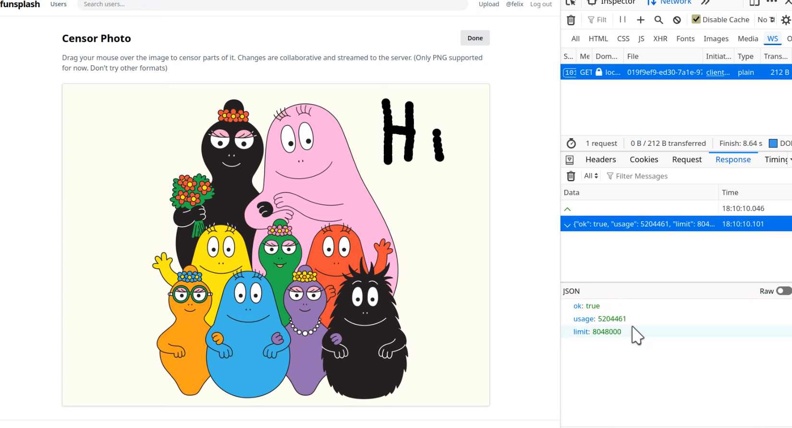
Figure 6: Screenshot showing the censoring of a photo over a WebSocket.
Again, only PNGs are supported!
2.6. Editing of profile and photos
Users can also edit their profile information and photo metadata:
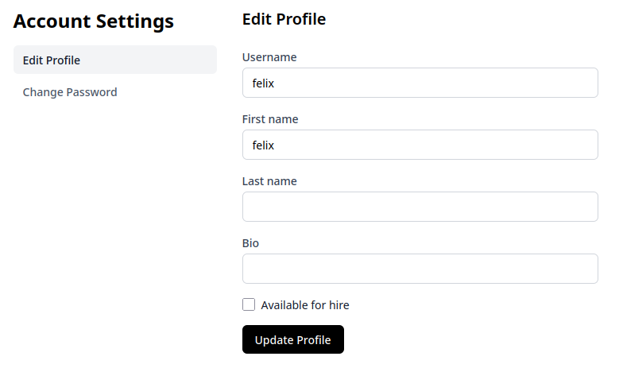
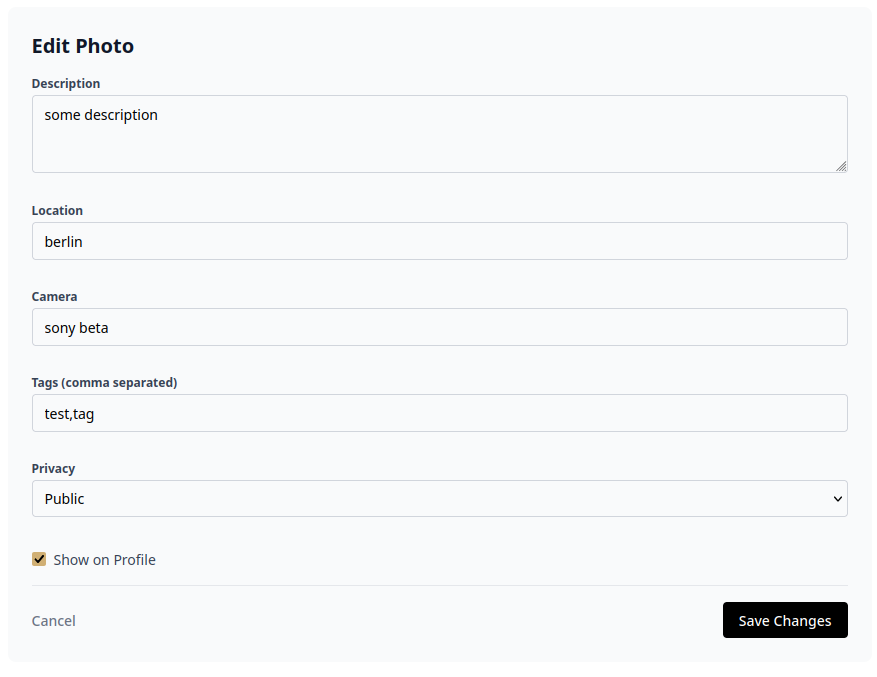
2.7. Collections and likes
Photos can be aggregated in multiple collections.
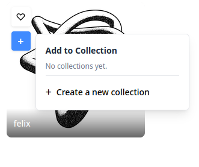
Collections can also be 'private'. This is the equivalent of the show on profile setting for photos.
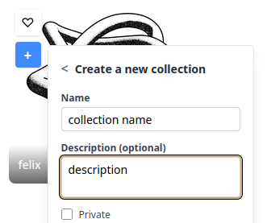
To show a users collections click collections on the users profile:
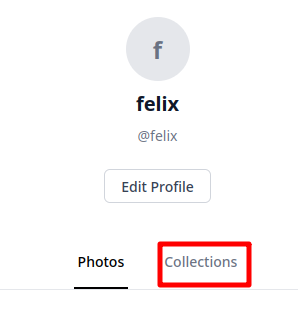
Users likes are recorded as well.
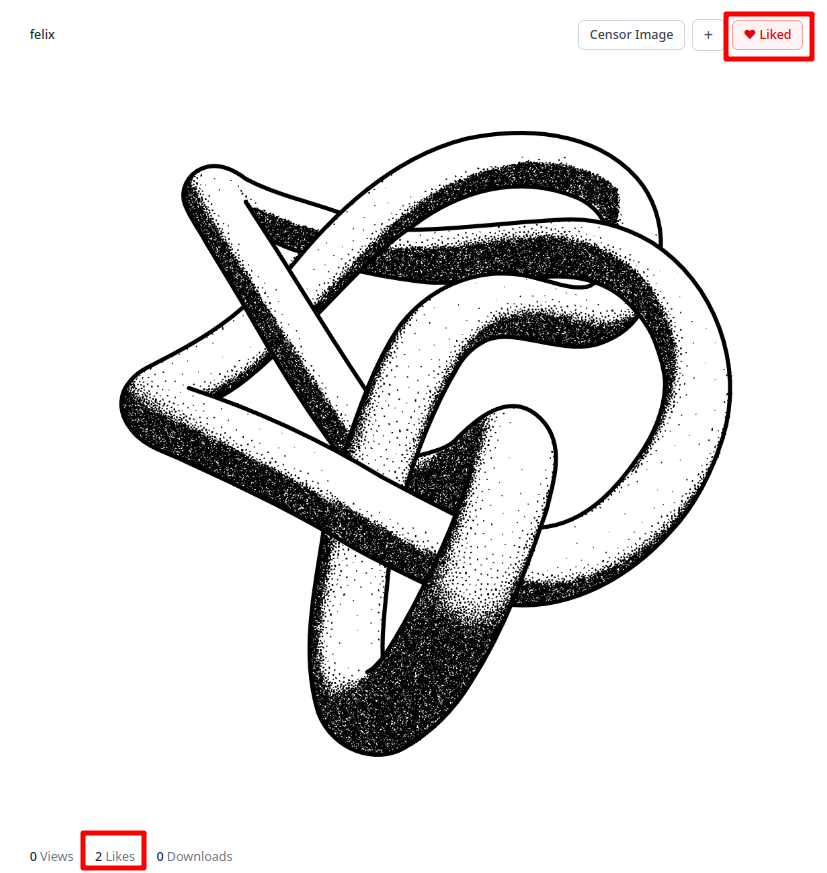
2.8. Cleanup
Every two minutes a Bash script runs and deletes all database entries and image files older then eleven minutes. This is done for storage reasons.
Every minute all entries from the servers ETS (cache) older then twelve minutes are evicted.
3. File Structure
Summary of relevant files within..
3.1. Service
.
├── .env - environment variables used by Docker deployment
├── cleanup.sh - cleanup script for database and filesystem
├── client
│ ├── Makefile - for building the frontend without docker and copying its result into the server priv dir
│ ├── src - Gleam Lustre SPA frontend
│ │ ├── ...
├── Dockerfile - Dockerfile for full-stakc Gleam build
├── server - Backend
│ ├── .env - env for local (dockerless) development
│ ├── gleam.toml - Dependencies for server
│ ├── init.sql - Postgres initialization file
│ ├── priv - Location for built frontend
│ ├── src
│ │ ├── id_server_ffi.erl - 'random' number generation for public id collections
│ │ ├── png - decoding, defiltering, and censoring of PNGs in Erlang and the Gleam ffi bindings
│ │ │ ├── censor.erl
│ │ │ ├── censor.gleam
│ │ │ ├── compression.erl
│ │ │ ├── fast_png.c - unused C file to confuse reviewers
│ │ │ ├── fast_png.erl
│ │ │ ├── png.erl
│ │ │ └── png.gleam
│ │ ├── server
│ │ │ ├── censor.gleam - WebSocket logic for live censoring
│ │ │ ├── collections.gleam - Buisness logic for collections
│ │ │ ├── config.gleam - Load config from env
│ │ │ ├── id_server.gleam - 'random' number generation for public id collections binding to erl file
│ │ │ ├── mimetype.gleam - Detect mimetypes of images
│ │ │ ├── models - Type declarations
│ │ │ │ ├── ...
│ │ │ ├── photos.gleam - Buisness logic for photos
│ │ │ ├── premium.gleam - Apply premium censor mask to premium photos
│ │ │ ├── router.gleam - routes api requests to functions in ./web
│ │ │ ├── sql - SQL queries
│ │ │ │ ├── ...
│ │ │ ├── sql.gleam - Auto generated Gleam funtions for SQL queries
│ │ │ ├── state.gleam - Stores 'state' such as caches, db connections etc.
│ │ │ ├── users.gleam - Buisness logic for users
│ │ │ ├── web - Functions serving http requests forwarded by router
│ │ │ │ ├── ...
│ │ │ └── web.gleam - Middleware and stores Context containing state and currently logged in user
│ │ ├── server.gleam - Starts server and routes websocket requests to censor.gleam and http requests to router.gleam
│ │ └── utils.gleam - utility functions
└── shared - shared types between server and client, automatically generated json decoders and html Form input validation used on both front and backend
├── ....
3.2. Checker
. ├── photos - photo files used by checker to fill user, add noise etc. │ ├── ... ├── src │ ├── checker.py - main checker code │ ├── collection.py - utility funtions │ ├── connection.py - utility funtions │ ├── crack.erl - erlang code for vuln 2 │ ├── exploit_prng.py - python code for vuln 2 │ ├── missing_tests.py - more tests │ ├── prng_recover.py - python code for vuln 2
4. Endpoints
Endpoints are grouped by feature. Endpoints often require a valid session cookie for authentication.
4.1. Search & info
| Method | Endpoint | Description |
|---|---|---|
GET |
/napi/users/:username |
Retrieve user profile information |
GET |
/napi/s/users/:username |
Search for a user by prefix |
GET |
/napi/users/:username/photos |
List a user's uploaded photos |
GET |
/napi/users/:username/collections |
List a user's collections |
4.2. Account & auth
| Method | Endpoint | Description |
|---|---|---|
POST |
/napi/join |
Register a new user |
POST |
/napi/login |
Login to an existing account |
POST |
/napi/logout |
Logout the current user |
GET |
/napi/me |
Fetch the currently authenticated user |
POST |
/napi/account |
Update account details |
POST |
/napi/account/password |
Change account password |
4.3. Photos & likes
| Method | Endpoint | Description |
|---|---|---|
POST |
/napi/upload |
Upload a new photo |
GET |
/napi/photos/:public_id |
View photo metadata |
POST |
/napi/photos/:public_id |
Update photo details |
DELETE |
/napi/photos/:public_id |
Delete a photo |
POST |
/napi/like/:public_id |
Like a photo |
DELETE |
/napi/like/:public_id |
Remove a like from a photo |
WS |
/napi/censor/:photo_id |
Websocket endpoint to censor a photo using provided masks |
4.4. Collections
| Method | Endpoint | Description |
|---|---|---|
POST |
/napi/collections |
Create a new collection |
GET |
/napi/collections/:id |
View a collection |
POST |
/napi/collections/:id |
Update collection details |
DELETE |
/napi/collections/:id |
Delete a collection |
GET |
/napi/collections/:id/photos |
Get photos inside a collection |
POST |
/napi/collections/:id/photos/:photo_id |
Add a photo to a collection |
DELETE |
/napi/collections/:id/photos/:photo_id |
Remove a photo from a collection |
4.5. Images
| Method | Endpoint | Description |
|---|---|---|
GET |
/images/photo-:asset_id |
Download a public photo |
GET |
/images/premium_photo-:asset_id |
Download a premium photo |
GET |
/images/private_photo-:asset_id |
Download a private photo |
5. Vulnerabilities and Exploits
5.1. Side-channel in censor endpoint
5.1.1. Flagstore
The flag is encoded as a QR code and uploaded as a premium image.
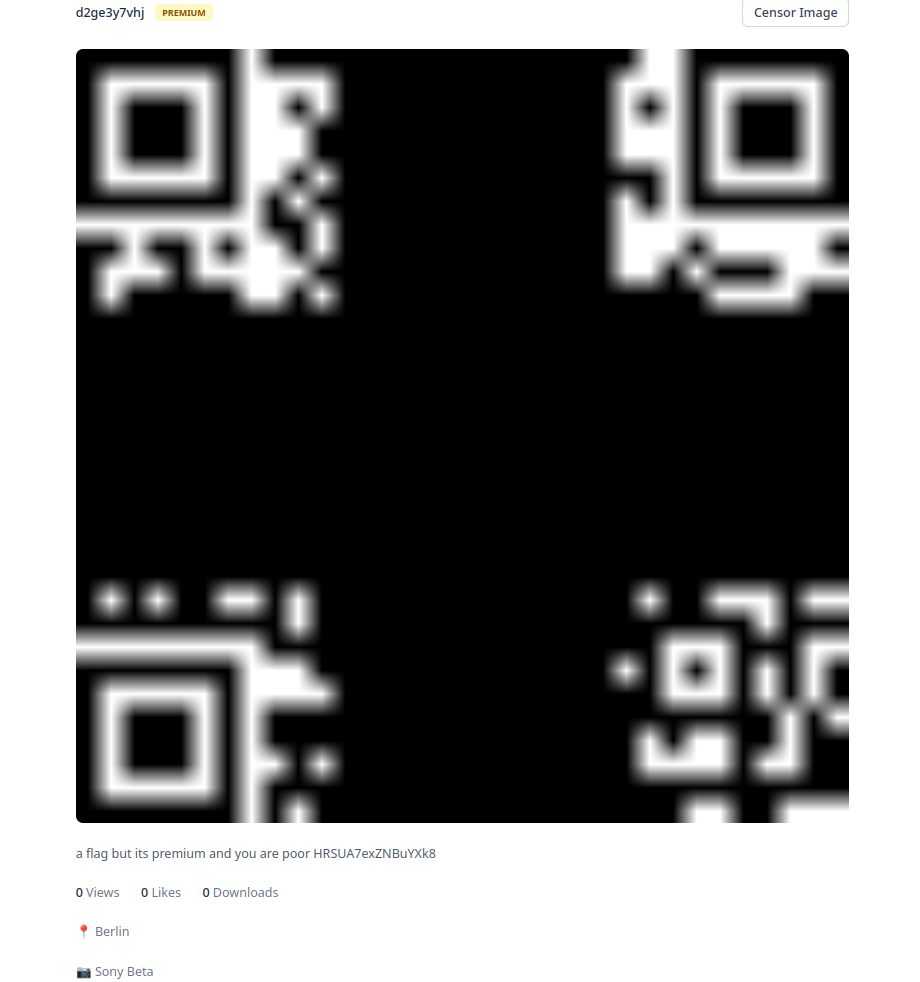
Figure 7: The view a user, other then the flag planter, has of the flag:
5.1.2. Vulnerability
In the censor WebSocket endpoint, the server checks if the size of the newly censored image is over the storage quota and returns the remaining quota or the amount of how much over the user would be:
case censor.censor_raw(state.in_photo, mask, state.z_stream) { Ok(censored_png) -> { let new_quota = state.user.storage_quota_used + png.size(censored_png) let #(ok, state) = case new_quota < state.user.storage_quota { True -> #("true", State(..state, out_photo: Some(censored_png))) False -> #("false", state) } let response = "{\"ok\": " <> ok <> ", \"usage\": " <> int.to_string(new_quota) <> ", \"limit\": " <> int.to_string(state.user.storage_quota) <> "}" let _ = mist.send_text_frame(connection, response) mist.continue(state) } // ... }
Since the size of the image is smallest, when its fully black, a mask, that censors everything but one pixel, will result in a larger image then a fully black image, if and only if, the uncensored pixel is not black (i.e. the resulting image not being uniformly black).
5.1.3. Exploit
So an attacker can, with around 800 masks over the same WebSocket (ignoring static and irrelevant parts of the QR-code such as timing, checksums, and positioning and alignment), gain knowledge about every pixels binary value and therefore reconstruct the QR-code and flag.
As a baseline size the attacker should first send an entirely black mask.
5.1.4. Fix
By adding random noise to the size, the attacker no longer has a binary base for deciding whether the pixel is black or white.
case censor.censor_raw(state.in_photo, mask, state.z_stream) {
Ok(censored_png) -> {
+ let #(rand, _) = random.step(random.int(0,10), random.new_seed(123))
- let new_quota = state.user.storage_quota_used + png.size(censored_png)
+ let new_quota = state.user.storage_quota_used + png.size(censored_png) + rand
let #(ok, state) = case new_quota < state.user.storage_quota {
True -> #("true", State(..state, out_photo: Some(censored_png)))
False -> #("false", state)
}
let response =
"{\"ok\": "
<> ok
<> ", \"usage\": "
<> int.to_string(new_quota)
<> ", \"limit\": "
<> int.to_string(state.user.storage_quota)
<> "}"
let _ = mist.send_text_frame(connection, response)
mist.continue(state)
}
// ...
}
5.2. Cache Poison
5.2.1. Flagstore
The flag is again encoded as a QR code but uploaded as a public photo with the dont show on profile attribute. Therefore, to gain access to the flag, an attacker needs to know the uuidv7 link, which, for photos with this attribute, is only available when a user views their own profile.
5.2.2. Vulnerability/ Exploit
This vulnerability is the result of two programming errors in different locations 1:
- Overly Eager Cache Update of Name
When a user updates their profile, they can also update their username. For the update operation, the program first checks if the user exists in the cache. If yes, the function returns an error. If not, it queries the database for the user by the newly chosen username. If the user doesn't exist, a database update query is made and the newly updated user is returned to update the caches with. If the user exists in the database, it is returned in the same variable for cache updates and invalidation.
The cache is then updated with this new user using the user provided username, and user-id from the logged in user.
The intended result of an attack would be for an attacker to change their username to that of the victim, so the victims user entry from the database is used to update the cache with the attackers
uid, resulting in the following cache layout:ProfileCache: Attacker username -> Victim uid ProfileCache: Victim username -> Victim uid UserCache: Victim uid -> {Victim uid, Victim username ...} UserCache: Attacker uid -> {Attacker uid, Attacker username}The only hindrances of this attack is, that if the attacker chooses the victims username, the first cache lookup will succeed and the function will fail and that the cache with the username as its key is is updated with
uset.insert_new, meaning it will only complete the insertion if no entry with the same key exists.To overcome this a successful attack needs to take advantage of the username in the database being of type
CITEXT(case insensitive text), while the cache key is case sensitive. So if the attackers new username equals that of the victim, except for the case, the first cache lookup will be empty and theuset.insert_newwill succeed.pub type UserCache = USet(user.Id, User) pub type ProfileCache = USet(user.UserName, user.Id)
pub fn update( user: shared_account.User, // provided by the update form the user fills out uid: user.Id, // id of currently logged in user state: State, ) -> Result(User, shared_account.Error) { let existing = uset.lookup(state.profile_cache, user.username) let created_user = case existing { // username exists in cache and doesn't belong to current user Ok(id) if id != uid -> Error(shared_account.UsernameExists) _ -> { case utils.db_limit(sql.user_find_by_name(state.db, user.username)) { Ok(user) -> user |> user.from_find_by_name |> Ok Error(_) -> { use inserted_user <- utils.db_limit_try( sql.user_update(...), shared_account.UsernameExists, ) let _ = uset.delete_key(state.profile_cache, user.username) let _ = uset.delete_key(state.user_cache, uid) inserted_user |> user.from_update |> Ok } } } } // update caches use new_user <- result.try(created_user) let real_new_user = User(..new_user, username: user.username, id: uid) let _ = uset.insert_new(state.profile_cache, user.username, new_user.id) let _ = uset.insert(state.user_cache, uid, real_new_user) Ok(new_user) }
- Using Name to Verify if Profile Viewer is Owner
When an attacker visits the victims profile, context user is loaded with the cache entry for the logged in users UID (attackers UID from the session cookie). This name is then compared with the one from the name parameter from the URI of the profile being viewed. If they match, all photos are returned. If not, only photos with
show_on_profile == Trueare returned.pub fn get_photos( _request: wisp.Request, context: web.Context, // context.user is cache entry of currently logged in user_id username: String, // username from get param in URI ) -> wisp.Response { use photos <- utils.result_guard( case context.user { Some(user) if user.username == username -> photos.get_by_username(context.state, username, True) // returns all photos of a user _ -> photos.get_by_username(context.state, username, False) // excludes photos with show_on_proflie == False }, wisp.not_found(), ) // ... }
With a successfully poisoned cache the attacker can now visit the profile of the victim with the same variation of case in the username as in the cache poison, causing the
if user.username == usernameto be true and being served all the victims photos. Including the flag. - Why is … not affected?
- Photo Privacy
To check if photo data is allowed to be served according to its privacy level, the user id is compared with the user id stored in the creator field of the photo.
use <- bool.guard(photo.creator != user.id, wisp.response(403))
Since the UID remains untouched by the cache poison, this is not affected.
- Collections
When viewing a users collections, the creators
user_idis compared with theuser_idfrom the signed session cookie of the viewer.use creator <- utils.result_guard( users.get_by_name(context.state, username), // username of currently viewd profile from URI param wisp.not_found(), ) let is_owner = case context.user { // cached user from lookup by uid from signed session cookie Some(user) if user.id == creator.id -> True _ -> False }
Since the UID remains untouched by the cache poison, this is not affected.
- Photo Privacy
5.2.3. Fix
This vulnerability can be fixed in multiple ways in both the update and get_photos functions.
The quickest way would be to return an error if the username already exists in the database.
pub fn update(
user: shared_account.User, // provided by the update form the user fills out
uid: user.Id, // id of currently logged in user
state: State,
) -> Result(User, shared_account.Error) {
let existing = uset.lookup(state.profile_cache, user.username)
let created_user = case existing {
// username exists in cache and doesn't belong to current user
Ok(id) if id != uid -> Error(shared_account.UsernameExists)
_ -> {
case utils.db_limit(sql.user_find_by_name(state.db, user.username)) {
- Ok(user) -> user |> user.from_find_by_name |> Ok
+ Ok(_) -> Error(shared_account.UsernameExists)
Error(_) -> {
use inserted_user <- utils.db_limit_try(
sql.user_update(...),
shared_account.UsernameExists,
)
// ...
}
Alternately the function could be written more gleam-like, reducing its length by half or the approaches from 5.2.2.3 could be applied to the get_photos function.
5.3. Not-So-Random Random Numbers
5.3.1. Flagstore
The flag is stored in the description of a private collection. To view a private collection, an attacker needs to know its public id, which is which, for private collections, is only available when a user views their own profile.
However, in contrast to photos with show_on_profile = False=, collections don't use a uuidv7 generated in Postgres but consists of nine 'random' URL encoded bytes.
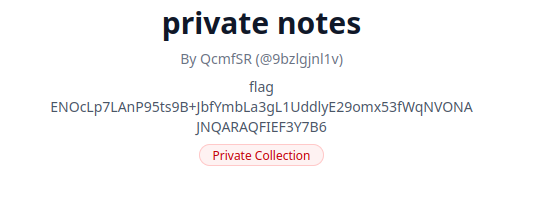
Figure 8: Private collection with flag as the description
5.3.2. Vulnerability
The random ids are generated by a single process (running through the entire lifetime of the server). Every time a new collection is created, this process is called to return its public id.
For that it uses the rand function from the Erlang std library.
@external(erlang, "rand", "bytes") fn rand_bytes(size: Int) -> BitArray
The seed generation is done once during startup and consists of a hash of the current time and a monotonic counter. But the phash2 function is called erroneously with a second argument of 32, controlling the number of elements in the hash functions image. The function only returns values 0,…,31, resulting in the seed not having significant enough entropy.
The second argument of 32 is intended to be read as the hash length in bytes by a player unfamiliar with the Erlang std library.
init() -> T = erlang:phash2({erlang:monotonic_time(nanosecond), erlang:unique_integer([monotonic])}, 32), rand:seed(exsss, {T, T + 1, T + 2}), ok.
5.3.3. Exploit
First an attacker has to take a measurement hash by creating a collection. Since the generate random id process is shared across all users, that measurement is in the same linear history of random values generated.
Then they spawn a new Erlang program simulating every possible random number derived from one of the 32 possible seeds by replicating the servers code for random id generation, until one of them equals the taken measurement. From that an attacker knows which value was the random seed. Using the measurement as the end for a sliding window of possible random ids over time. The attacker can now try their generated ids and try them out as collection public ids one by one on the server.
This usually gathers a hit within 30 tries.
If the attacker spawns one Erlang process for each possible seed value a hit of measurement == generated id takes less then a second, even if the server has been running for many hours.
5.3.4. Fix
Addressing all of the shortcomings described in the vulnerability section could suffice as a fix.
What needs to kept in mind however is that, even with a random seed, the xsss (Xor-Shift) algorithm used by the random number function from Erlangs std library is not cryptographically secure and could be reversed with a z3 solver.
The fix requiring the least amount of work however is to insert a uuidv7 as a default value in the init.sql for the public id and removing all random number generation from the server code.
Footnotes:
Some comments in the code were only inserted for the purpose of this documentation and are not contained withing the actual code.